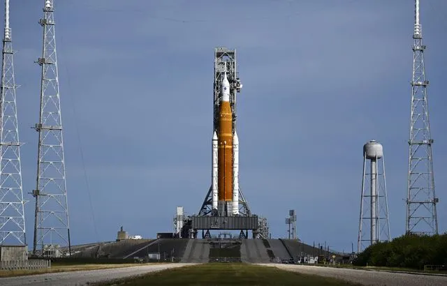

Mission Artémis : La fusée de la Nasa doit décoller vers la Lune cette nuit

Après deux échecs, troisième essai pour la nouvelle méga-fusée de la Nasa : le décollage de la mission Artémis 1 est prévu la nuit prochaine depuis la Floride. Et cette fois, tous les voyants semblent au vert pour enfin lancer le grand programme américain de retour sur la Lune. Le baptême de l’air de la fusée SLS, la plus puissante du monde, est programmé mercredi à 7h04 du matin, heure française, avec une fenêtre de tir possible de deux heures. La météo s’annonce coopérative, avec 90 % de chances de temps favorable.
« Notre heure va venir, et nous espérons que ce soit mercredi », a déclaré ce lundi soir Mike Sarafin, responsable de la mission. Il a loué la « persévérance » de ses équipes, qui ont dû rebondir après deux tentatives de décollage ratées l’été dernier, puis deux ouragans. Cinquante ans après la dernière mission Apollo, ce vol test non habité, qui fera le tour de la Lune sans y atterrir, doit permettre de confirmer que le véhicule est sûr pour un futur équipage. Cette même fusée emmènera à l’avenir la première femme et la première personne de couleur sur la Lune.
Mission de 25 jours
Après ces soucis techniques, deux ouragans ont successivement menacé la fusée. Cette géante de 98 mètres de haut a d’abord dû être rentrée fin septembre dans son bâtiment d’assemblage pour être mise à l’abri de l’ouragan Ian, repoussant le décollage de plusieurs semaines. Puis, une fois ressortie sur son pas de tir, elle a dû affronter il y a moins d’une semaine les vents de l’ouragan Nicole. Cette tempête a causé l’endommagement d’une fine couche de mastic au sommet de la fusée, mais la Nasa a estimé lundi que le risque induit était minime. Au total, le programme cumule plusieurs années de retard, et la réussite de cette mission, qui coûte plusieurs milliards de dollars, est devenue impérative pour la Nasa. Juste après le décollage, les équipes du centre de contrôle à Houston, au Texas, prendront la main. Au bout de deux minutes, les deux propulseurs d’appoint blancs retomberont dans l’Atlantique. Après huit minutes, l’étage principal se détachera à son tour. Puis, environ 1h30 après le décollage, une dernière poussée de l’étage supérieur mettra la capsule Orion sur le chemin de la Lune, qu’elle rejoindra en quelques jours. Là, elle sera placée sur une orbite distante durant environ une semaine et s’aventurera jusqu’à 64.000 km derrière la Lune - un record pour une capsule habitable. Enfin, Orion entamera son retour vers la Terre, mettant à l’épreuve son bouclier thermique, le plus grand jamais construit. Il devra supporter une température moitié aussi chaude que la surface du Soleil en traversant l’atmosphère. Si le décollage a bien lieu mercredi, la mission doit durer 25 jours et demi, avec un amerrissage dans l’océan Pacifique le 11 décembre prochain.
15/11/22 à 16h11